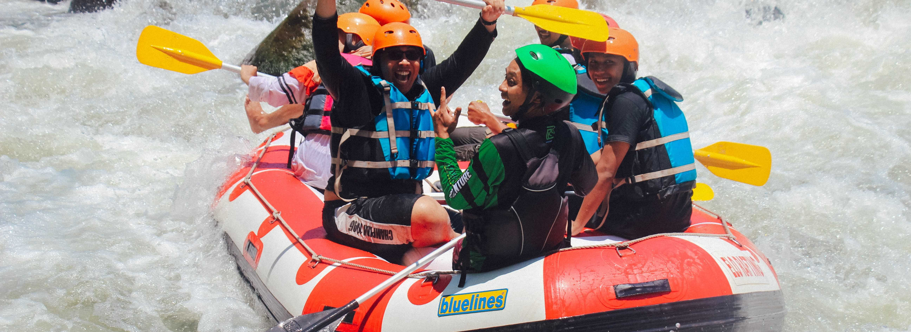

Thrill
1. Rafting

White water rafting is the biggest attraction for crowds in Uttarakhand as this place is blessed with lofty mountains and streaming rivers that make for an amazing opportunity to indulge in this adventure sport. White water rafting is amongst the most popular adventure sports in Uttarakhand that involves a group of people to navigate a river on a raft. This activity is best enjoyed in the foothills and whitewater, Uttarakhand offers plenty of places to provide this. Best time for rafting: The best time for River Rafting is from late September – October to mid November, and then the best time to visit Rishikesh is from early March – April to the first week of May.
2. Bungee Jumping
White water rafting is the biggest attraction for crowds in Uttarakhand as this place is blessed with lofty mountains and streaming rivers that make for an amazing opportunity to indulge in this adventure sport. White water rafting is amongst the most popular adventure sports in Uttarakhand that involves a group of people to navigate a river on a raft. This activity is best enjoyed in the foothills and whitewater, Uttarakhand offers plenty of places to provide this. Best time for rafting: The best time for River Rafting is from late September – October to mid November, and then the best time to visit Rishikesh is from early March – April to the first week of May.